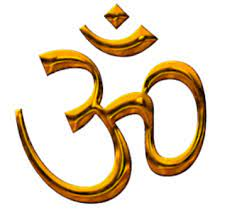

गणेश चालीसा
॥ दोहा ॥
जय गणपति सदगुण सदन,
कविवर बदन कृपाल ।
विघ्न हरण मंगल करण,
जय जय गिरिजालाल ॥
॥ चौपाई ॥
जय जय जय गणपति गणराजू ।
मंगल भरण करण शुभः काजू ॥
जै गजबदन सदन सुखदाता ।
विश्व विनायका बुद्धि विधाता ॥
वक्र तुण्ड शुची शुण्ड सुहावना ।
तिलक त्रिपुण्ड भाल मन भावन ॥
राजत मणि मुक्तन उर माला ।
स्वर्ण मुकुट शिर नयन विशाला ॥
पुस्तक पाणि कुठार त्रिशूलं ।
मोदक भोग सुगन्धित फूलं ॥
सुन्दर पीताम्बर तन साजित ।
चरण पादुका मुनि मन राजित ॥
धनि शिव सुवन षडानन भ्राता ।
गौरी लालन विश्व-विख्याता ॥
ऋद्धि-सिद्धि तव चंवर सुधारे ।
मुषक वाहन सोहत द्वारे ॥
कहौ जन्म शुभ कथा तुम्हारी ।
अति शुची पावन मंगलकारी ॥
एक समय गिरिराज कुमारी ।
पुत्र हेतु तप कीन्हा भारी ॥ 10 ॥
भयो यज्ञ जब पूर्ण अनूपा ।
तब पहुंच्यो तुम धरी द्विज रूपा ॥
अतिथि जानी के गौरी सुखारी ।
बहुविधि सेवा करी तुम्हारी ॥
अति प्रसन्न हवै तुम वर दीन्हा ।
मातु पुत्र हित जो तप कीन्हा ॥
मिलहि पुत्र तुहि, बुद्धि विशाला ।
बिना गर्भ धारण यहि काला ॥
गणनायक गुण ज्ञान निधाना ।
पूजित प्रथम रूप भगवाना ॥
अस कही अन्तर्धान रूप हवै ।
पालना पर बालक स्वरूप हवै ॥
बनि शिशु रुदन जबहिं तुम ठाना ।
लखि मुख सुख नहिं गौरी समाना ॥
सकल मगन, सुखमंगल गावहिं ।
नाभ ते सुरन, सुमन वर्षावहिं ॥
शम्भु, उमा, बहुदान लुटावहिं ।
सुर मुनिजन, सुत देखन आवहिं ॥
लखि अति आनन्द मंगल साजा ।
देखन भी आये शनि राजा ॥ 20 ॥
निज अवगुण गुनि शनि मन माहीं ।
बालक, देखन चाहत नाहीं ॥
गिरिजा कछु मन भेद बढायो ।
उत्सव मोर, न शनि तुही भायो ॥
कहत लगे शनि, मन सकुचाई ।
का करिहौ, शिशु मोहि दिखाई ॥
नहिं विश्वास, उमा उर भयऊ ।
शनि सों बालक देखन कहयऊ ॥
पदतहिं शनि दृग कोण प्रकाशा ।
बालक सिर उड़ि गयो अकाशा ॥
गिरिजा गिरी विकल हवै धरणी ।
सो दुःख दशा गयो नहीं वरणी ॥
हाहाकार मच्यौ कैलाशा ।
शनि कीन्हों लखि सुत को नाशा ॥
तुरत गरुड़ चढ़ि विष्णु सिधायो ।
काटी चक्र सो गज सिर लाये ॥
बालक के धड़ ऊपर धारयो ।
प्राण मन्त्र पढ़ि शंकर डारयो ॥
नाम गणेश शम्भु तब कीन्हे ।
प्रथम पूज्य बुद्धि निधि, वर दीन्हे ॥ 30 ॥
बुद्धि परीक्षा जब शिव कीन्हा ।
पृथ्वी कर प्रदक्षिणा लीन्हा ॥
चले षडानन, भरमि भुलाई ।
रचे बैठ तुम बुद्धि उपाई ॥
चरण मातु-पितु के धर लीन्हें ।
तिनके सात प्रदक्षिण कीन्हें ॥
धनि गणेश कही शिव हिये हरषे ।
नभ ते सुरन सुमन बहु बरसे ॥
तुम्हरी महिमा बुद्धि बड़ाई ।
शेष सहसमुख सके न गाई ॥
मैं मतिहीन मलीन दुखारी ।
करहूं कौन विधि विनय तुम्हारी ॥
भजत रामसुन्दर प्रभुदासा ।
जग प्रयाग, ककरा, दुर्वासा ॥
अब प्रभु दया दीना पर कीजै ।
अपनी शक्ति भक्ति कुछ दीजै ॥ 38 ॥
॥ दोहा ॥
श्री गणेश यह चालीसा,
पाठ करै कर ध्यान ।
नित नव मंगल गृह बसै,
लहे जगत सन्मान ॥
दुर्गा चालीसा
नमो नमो दुर्गे सुख करनी ।
नमो नमो दुर्गे दुःख हरनी ॥
निरंकार है ज्योति तुम्हारी ।
तिहूँ लोक फैली उजियारी ॥
शशि ललाट मुख महाविशाला ।
नेत्र लाल भृकुटि विकराला ॥
रूप मातु को अधिक सुहावे ।
दरश करत जन अति सुख पावे ॥ ४
तुम संसार शक्ति लै कीना ।
पालन हेतु अन्न धन दीना ॥
अन्नपूर्णा हुई जग पाला ।
तुम ही आदि सुन्दरी बाला ॥
प्रलयकाल सब नाशन हारी ।
तुम गौरी शिवशंकर प्यारी ॥
शिव योगी तुम्हरे गुण गावें ।
ब्रह्मा विष्णु तुम्हें नित ध्यावें ॥ ८
रूप सरस्वती को तुम धारा ।
दे सुबुद्धि ऋषि मुनिन उबारा ॥
धरयो रूप नरसिंह को अम्बा ।
परगट भई फाड़कर खम्बा ॥
रक्षा करि प्रह्लाद बचायो ।
हिरण्याक्ष को स्वर्ग पठायो ॥
लक्ष्मी रूप धरो जग माहीं ।
श्री नारायण अंग समाहीं ॥ १२
क्षीरसिन्धु में करत विलासा ।
दयासिन्धु दीजै मन आसा ॥
हिंगलाज में तुम्हीं भवानी ।
महिमा अमित न जात बखानी ॥
मातंगी अरु धूमावति माता ।
भुवनेश्वरी बगला सुख दाता ॥
श्री भैरव तारा जग तारिणी ।
छिन्न भाल भव दुःख निवारिणी ॥ १६
केहरि वाहन सोह भवानी ।
लांगुर वीर चलत अगवानी ॥
कर में खप्पर खड्ग विराजै ।
जाको देख काल डर भाजै ॥
सोहै अस्त्र और त्रिशूला ।
जाते उठत शत्रु हिय शूला ॥
नगरकोट में तुम्हीं विराजत ।
तिहुँलोक में डंका बाजत ॥ २०
शुम्भ निशुम्भ दानव तुम मारे ।
रक्तबीज शंखन संहारे ॥
महिषासुर नृप अति अभिमानी ।
जेहि अघ भार मही अकुलानी ॥
रूप कराल कालिका धारा ।
सेन सहित तुम तिहि संहारा ॥
परी गाढ़ सन्तन पर जब जब ।
भई सहाय मातु तुम तब तब ॥ २४
अमरपुरी अरु बासव लोका ।
तब महिमा सब रहें अशोका ॥
ज्वाला में है ज्योति तुम्हारी ।
तुम्हें सदा पूजें नरनारी ॥
प्रेम भक्ति से जो यश गावें ।
दुःख दारिद्र निकट नहिं आवें ॥
ध्यावे तुम्हें जो नर मन लाई ।
जन्ममरण ताकौ छुटि जाई ॥ २८
जोगी सुर मुनि कहत पुकारी ।
योग न हो बिन शक्ति तुम्हारी ॥
शंकर आचारज तप कीनो ।
काम अरु क्रोध जीति सब लीनो ॥
निशिदिन ध्यान धरो शंकर को ।
काहु काल नहिं सुमिरो तुमको ॥
शक्ति रूप का मरम न पायो ।
शक्ति गई तब मन पछितायो ॥ ३२
शरणागत हुई कीर्ति बखानी ।
जय जय जय जगदम्ब भवानी ॥
भई प्रसन्न आदि जगदम्बा ।
दई शक्ति नहिं कीन विलम्बा ॥
मोको मातु कष्ट अति घेरो ।
तुम बिन कौन हरै दुःख मेरो ॥
आशा तृष्णा निपट सतावें ।
मोह मदादिक सब बिनशावें ॥ ३६
शत्रु नाश कीजै महारानी ।
सुमिरौं इकचित तुम्हें भवानी ॥
करो कृपा हे मातु दयाला ।
ऋद्धिसिद्धि दै करहु निहाला ॥
जब लगि जिऊँ दया फल पाऊँ ।
तुम्हरो यश मैं सदा सुनाऊँ ॥
श्री दुर्गा चालीसा जो कोई गावै ।
सब सुख भोग परमपद पावै ॥ ४०
देवीदास शरण निज जानी ।
कहु कृपा जगदम्ब भवानी ॥
॥दोहा॥
शरणागत रक्षा करे,
भक्त रहे नि:शंक ।
मैं आया तेरी शरण में,
मातु लिजिये अंक ॥
॥ इति श्री दुर्गा चालीसा ॥
॥ श्री हनुमान चालीसा ॥
॥ दोहा॥
श्रीगुरु चरन सरोज रज
निज मनु मुकुरु सुधारि ।
बरनउँ रघुबर बिमल जसु
जो दायकु फल चारि ॥
बुद्धिहीन तनु जानिके
सुमिरौं पवन-कुमार ।
बल बुधि बिद्या देहु मोहिं
हरहु कलेस बिकार ॥
॥ चौपाई ॥
जय हनुमान ज्ञान गुन सागर ।
जय कपीस तिहुँ लोक उजागर ॥
राम दूत अतुलित बल धामा ।
अंजनि पुत्र पवनसुत नामा ॥
महाबीर बिक्रम बजरंगी ।
कुमति निवार सुमति के संगी ॥
कंचन बरन बिराज सुबेसा ।
कानन कुण्डल कुँचित केसा ॥४
हाथ बज्र अरु ध्वजा बिराजै ।
काँधे मूँज जनेउ साजै ॥
शंकर सुवन केसरी नंदन ।
तेज प्रताप महा जगवंदन ॥
बिद्यावान गुनी अति चातुर ।
राम काज करिबे को आतुर ॥
प्रभु चरित्र सुनिबे को रसिया ।
राम लखन सीता मन बसिया ॥८
सूक्ष्म रूप धरि सियहिं दिखावा ।
बिकट रूप धरि लंक जरावा ॥
भीम रूप धरि असुर सँहारे ।
रामचन्द्र के काज सँवारे ॥
लाय सजीवन लखन जियाए ।
श्री रघुबीर हरषि उर लाये ॥
रघुपति कीन्ही बहुत बड़ाई ।
तुम मम प्रिय भरतहि सम भाई ॥१२
सहस बदन तुम्हरो जस गावैं ।
अस कहि श्रीपति कण्ठ लगावैं ॥
सनकादिक ब्रह्मादि मुनीसा ।
नारद सारद सहित अहीसा ॥
जम कुबेर दिगपाल जहाँ ते ।
कबि कोबिद कहि सके कहाँ ते ॥
तुम उपकार सुग्रीवहिं कीह्ना ।
राम मिलाय राज पद दीह्ना ॥१६
तुम्हरो मंत्र बिभीषण माना ।
लंकेश्वर भए सब जग जाना ॥
जुग सहस्त्र जोजन पर भानु ।
लील्यो ताहि मधुर फल जानू ॥
प्रभु मुद्रिका मेलि मुख माहीं ।
जलधि लाँघि गये अचरज नाहीं ॥
दुर्गम काज जगत के जेते ।
सुगम अनुग्रह तुम्हरे तेते ॥२०
राम दुआरे तुम रखवारे ।
होत न आज्ञा बिनु पैसारे ॥
सब सुख लहै तुम्हारी सरना ।
तुम रक्षक काहू को डरना ॥
आपन तेज सम्हारो आपै ।
तीनों लोक हाँक तै काँपै ॥
भूत पिशाच निकट नहिं आवै ।
महावीर जब नाम सुनावै ॥२४
नासै रोग हरै सब पीरा ।
जपत निरंतर हनुमत बीरा ॥
संकट तै हनुमान छुडावै ।
मन क्रम बचन ध्यान जो लावै ॥
सब पर राम तपस्वी राजा ।
तिनके काज सकल तुम साजा ॥
और मनोरथ जो कोई लावै ।
सोई अमित जीवन फल पावै ॥२८
चारों जुग परताप तुम्हारा ।
है परसिद्ध जगत उजियारा ॥
साधु सन्त के तुम रखवारे ।
असुर निकंदन राम दुलारे ॥
अष्ट सिद्धि नौ निधि के दाता ।
अस बर दीन जानकी माता ॥
राम रसायन तुम्हरे पासा ।
सदा रहो रघुपति के दासा ॥३२
तुम्हरे भजन राम को पावै ।
जनम जनम के दुख बिसरावै ॥
अंतकाल रघुवरपुर जाई ।
जहाँ जन्म हरिभक्त कहाई ॥
और देवता चित्त ना धरई ।
हनुमत सेइ सर्ब सुख करई ॥
संकट कटै मिटै सब पीरा ।
जो सुमिरै हनुमत बलबीरा ॥३६
जै जै जै हनुमान गोसाईं ।
कृपा करहु गुरुदेव की नाईं ॥
जो सत बार पाठ कर कोई ।
छूटहि बंदि महा सुख होई ॥
जो यह पढ़ै हनुमान चालीसा ।
होय सिद्धि साखी गौरीसा ॥
तुलसीदास सदा हरि चेरा ।
कीजै नाथ हृदय मह डेरा ॥४०
॥ दोहा ॥
पवन तनय संकट हरन,
मंगल मूरति रूप ।
राम लखन सीता सहित,
हृदय बसहु सुर भूप ॥
॥ श्री हनुमानाष्टक ॥
बाल समय रवि भक्षी लियो तब,
तीनहुं लोक भयो अंधियारों ।
ताहि सों त्रास भयो जग को,
यह संकट काहु सों जात न टारो ।
देवन आनि करी बिनती तब,
छाड़ी दियो रवि कष्ट निवारो ।
को नहीं जानत है जग में कपि,
संकटमोचन नाम तिहारो ॥ १ ॥
बालि की त्रास कपीस बसैं गिरि,
जात महाप्रभु पंथ निहारो ।
चौंकि महामुनि साप दियो तब,
चाहिए कौन बिचार बिचारो ।
कैद्विज रूप लिवाय महाप्रभु,
सो तुम दास के सोक निवारो ।
को नहीं जानत है जग में कपि,
संकटमोचन नाम तिहारो ॥ २ ॥
अंगद के संग लेन गए सिय,
खोज कपीस यह बैन उचारो ।
जीवत ना बचिहौ हम सो जु,
बिना सुधि लाये इहाँ पगु धारो ।
हेरी थके तट सिन्धु सबे तब,
लाए सिया-सुधि प्राण उबारो ।
को नहीं जानत है जग में कपि,
संकटमोचन नाम तिहारो ॥ ३ ॥
रावण त्रास दई सिय को सब,
राक्षसी सों कही सोक निवारो ।
ताहि समय हनुमान महाप्रभु,
जाए महा रजनीचर मरो ।
चाहत सीय असोक सों आगि सु,
दै प्रभुमुद्रिका सोक निवारो ।
को नहीं जानत है जग में कपि,
संकटमोचन नाम तिहारो ॥ ४ ॥
बान लाग्यो उर लछिमन के तब,
प्राण तजे सूत रावन मारो ।
लै गृह बैद्य सुषेन समेत,
तबै गिरि द्रोण सु बीर उपारो ।
आनि सजीवन हाथ दिए तब,
लछिमन के तुम प्रान उबारो ।
को नहीं जानत है जग में कपि,
संकटमोचन नाम तिहारो ॥ ५ ॥
रावन जुध अजान कियो तब,
नाग कि फाँस सबै सिर डारो ।
श्रीरघुनाथ समेत सबै दल,
मोह भयो यह संकट भारो
आनि खगेस तबै हनुमान जु,
बंधन काटि सुत्रास निवारो ।
को नहीं जानत है जग में कपि,
संकटमोचन नाम तिहारो ॥ ६ ॥
बंधू समेत जबै अहिरावन,
लै रघुनाथ पताल सिधारो ।
देबिन्हीं पूजि भलि विधि सों बलि,
देउ सबै मिलि मन्त्र विचारो ।
जाये सहाए भयो तब ही,
अहिरावन सैन्य समेत संहारो ।
को नहीं जानत है जग में कपि,
संकटमोचन नाम तिहारो ॥ ७ ॥
काज किये बड़ देवन के तुम,
बीर महाप्रभु देखि बिचारो ।
कौन सो संकट मोर गरीब को,
जो तुमसे नहिं जात है टारो ।
बेगि हरो हनुमान महाप्रभु,
जो कछु संकट होए हमारो ।
को नहीं जानत है जग में कपि,
संकटमोचन नाम तिहारो ॥ ८ ॥
॥ दोहा ॥
लाल देह लाली लसे,
अरु धरि लाल लंगूर ।
वज्र देह दानव दलन,
जय जय जय कपि सूर ॥
॥श्री बजरंग बाण पाठ॥
॥ दोहा ॥
निश्चय प्रेम प्रतीति ते,
बिनय करैं सनमान ।
तेहि के कारज सकल शुभ,
सिद्ध करैं हनुमान॥
॥ चौपाई ॥
जय हनुमंत संत हितकारी ।
सुन लीजै प्रभु अरज हमारी ॥
जन के काज बिलंब न कीजै ।
आतुर दौरि महा सुख दीजै ॥
जैसे कूदि सिंधु महिपारा ।
सुरसा बदन पैठि बिस्तारा ॥
आगे जाय लंकिनी रोका ।
मारेहु लात गई सुरलोका ॥
जाय बिभीषन को सुख दीन्हा ।
सीता निरखि परमपद लीन्हा ॥
बाग उजारि सिंधु महँ बोरा ।
अति आतुर जमकातर तोरा ॥
अक्षय कुमार मारि संहारा ।
लूम लपेटि लंक को जारा ॥
लाह समान लंक जरि गई ।
जय जय धुनि सुरपुर नभ भई ॥
अब बिलंब केहि कारन स्वामी ।
कृपा करहु उर अंतरयामी ॥
जय जय लखन प्रान के दाता ।
आतुर ह्वै दुख करहु निपाता ॥
जै हनुमान जयति बल-सागर ।
सुर-समूह-समरथ भट-नागर ॥
ॐ हनु हनु हनु हनुमंत हठीले ।
बैरिहि मारु बज्र की कीले ॥
ॐ ह्नीं ह्नीं ह्नीं हनुमंत कपीसा ।
ॐ हुं हुं हुं हनु अरि उर सीसा ॥
जय अंजनि कुमार बलवंता ।
शंकरसुवन बीर हनुमंता ॥
बदन कराल काल-कुल-घालक ।
राम सहाय सदा प्रतिपालक ॥
भूत, प्रेत, पिसाच निसाचर ।
अगिन बेताल काल मारी मर ॥
इन्हें मारु, तोहि सपथ राम की ।
राखु नाथ मरजाद नाम की ॥
सत्य होहु हरि सपथ पाइ कै ।
राम दूत धरु मारु धाइ कै ॥
जय जय जय हनुमंत अगाधा ।
दुख पावत जन केहि अपराधा ॥
पूजा जप तप नेम अचारा ।
नहिं जानत कछु दास तुम्हारा ॥
बन उपबन मग गिरि गृह माहीं ।
तुम्हरे बल हौं डरपत नाहीं ॥
जनकसुता हरि दास कहावौ ।
ताकी सपथ बिलंब न लावौ ॥
जै जै जै धुनि होत अकासा ।
सुमिरत होय दुसह दुख नासा ॥
चरन पकरि, कर जोरि मनावौं ।
यहि औसर अब केहि गोहरावौं ॥
उठु, उठु, चलु, तोहि राम दुहाई ।
पायँ परौं, कर जोरि मनाई ॥
ॐ चं चं चं चं चपल चलंता ।
ॐ हनु हनु हनु हनु हनुमंता ॥
ॐ हं हं हाँक देत कपि चंचल ।
ॐ सं सं सहमि पराने खल-दल ॥
अपने जन को तुरत उबारौ ।
सुमिरत होय आनंद हमारौ ॥
यह बजरंग-बाण जेहि मारै ।
ताहि कहौ फिरि कवन उबारै ॥
पाठ करै बजरंग-बाण की ।
हनुमत रक्षा करै प्रान की ॥
यह बजरंग बाण जो जापैं ।
तासों भूत-प्रेत सब कापैं ॥
धूप देय जो जपै हमेसा ।
ताके तन नहिं रहै कलेसा ॥
॥ दोहा ॥
उर प्रतीति दृढ़, सरन ह्वै,
पाठ करै धरि ध्यान ।
बाधा सब हर,
करैं सब काम सफल हनुमान ॥